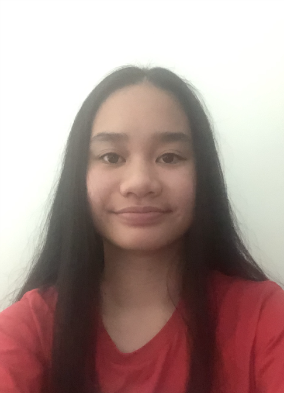
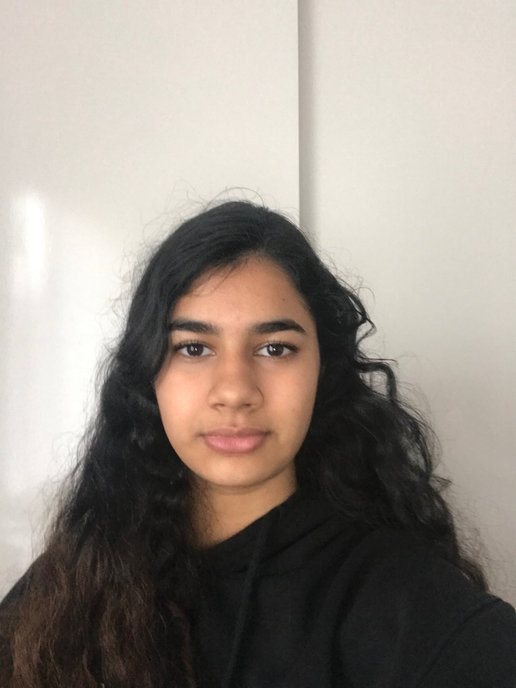

Jessanis3844703@rmit.rmit.edu.au |
● BACKGROUND: I was born in Perth, and grew up in Australia. After a couple of years, I moved to Melbourne. ● PASSION IN IT: IT peaked my interest because of the creativity and problem solving aspect of the job. I aim to become a developer that creates applications and websites. ● IT ABILITY: The only experience I have in terms of programming is basic HTML and CSS. During year 12, I did a VET course called Screen and Media. One of the projects for the course was to create a website portfolio. ● STRENGTHS: I believe my current strengths are planning, being efficient and having a meticulous approach towards projects. I think I have a good ability in designing, because I have also done a lot of design work in the past. ● WEAKNESSES: If I were to improve, I think I would enhance my time management skills in order to use my time more effectively. I may tend to be forgetful about things, so in order to resolve this, I can keep a place to record my reminders or notes I need to remember. Similarly, the whole group could potentially be developed and improved if our organisation skills and time management were planned out in a realistic and productive approach. ● CHALLENGES WITHIN THE PROJECT: I think the challenges we will be facing within the project is being able to predict and plan our next steps for the upcoming weeks of the project. ● TEAM CONTRIBUTIONS I have complete part of the content for our website and I am a Programmer. The content I have completed is Group Contract and I will be programming the Pre Quiz |
Jades3839597@student.rmit.edu.au |
● BACKGROUND: I was born and grew up in Melbourne Australia. ● HOBBIES: I like to draw, I love music; listening and playing the cello and trumpet, I also enjoy learning Japanese. ● EXPERIENCE IN IT: My IT experience is from my work experience in high school. I got the chance to work at a company that develops websites which is where I could really see how IT can be a career and this is also how I became more interested in IT and web developing. ● PASSION IN IT: I have an interest in web development, and creating programs through programming. I am aiming to be a full stack web developer as I'm interested in the front end development of web development because of the designing, creative element to it and I like back end Developer because it is more about the behind the scene/ the server-side of the application and how it supports the front end. ● STRONG POINTS: For my 1st semester at university I studied computer systems, intro to programming, intro to IT and user centred design. So some of my current abilities are learnt through those courses. I feel that I have very good management and organization skills as I love to plan and have an achievable schedule. I like to get tasks done efficiently in order to keep on track as well. ● WEAK POINTS: I still have a lot more to learn with those computer languages I learnt in 1st semester of university and furthermore with other programming languages. My weakness is spelling and writing, so throughout this project I would love to develop those skills and develop on working effectively as a team as part of an outcome from this project. ● CHALLENGES WITHIN THE PROJECT: We might expect to complete tasks by certain dates and only to be pushed soa challenge could be time management. Or tasks might take too long to be completed by the deadline of the project overall. ● TASK CONTRIBUTIONS: Leader, Project Motivation, Justified Workload, Post Quiz |
Akeelas3841561@student.rmit.edu.au |
● BACKGROUND: I was born in Sri Lanka and raised in Singapore before moving to Australia to start school. I was raised speaking 4 languages; Tamil, Sinhalese, Arabic and English . ● HOBBIES: My hobbies include playing the piano, reading and painting and I like to spend 1 to 2 hours a day on any one of those activities. ● INTEREST IN IT: My interest in IT is organising and analysing data and statistics so my ideal career is to be a Data Scientist or Analyst. ● IT EXPERIENCE: I have basic experience in coding with Java and Python as well as HTML & CSS. I aim to do internships and other workplace opportunities during the duration of my studies to build up my skills. ● STRONG POINTS: I can do basic coding in a few languages but i’m mostly interested in developing my skills in data management. ● WEAK POINTS: My skills in coding are very basic so i plan to further develop them during this semester because they are an essential skill in the industry. ● CHALLENGES WITHIN PROJECT: ● TASK CONTRIBUTION: I worked on … Chatbot |
Anisahs3844605@student.rmit.edu.au |
● BACKGROUND: I was born and raised in Singapore, I moved to Australia 7 years ago and I’ve settled quite well in Melbourne. ● HOBBIES: During my free time, I often watch baking videos and experiment with the recipes I’ve found interesting. Currently, my favourite desserts are French macarons and taro bingsu! I really enjoy collecting mangas, figurines and kpop albums too. ● INTEREST IN IT: Apart from making desserts, my favourite aspect of IT is design. Being able to turn a storyboard into a website where users are able to interact with is something that I’m passionate about! Creating a product that appeals to the audience is also something that i’m fond of. ● IT EXPERIENCE: I used to do folio subjects back in high school, so I do have experience with software such as Adobe photoshop and illustrator. Though for the future, I would have to be fluent in essential front-end web development languages such as HTML, CSS and JavaScript to create an application from scratch. ● CHALLENGES WITHIN PROJECT: My weakest skill is coding and I would usually stray away from having the role of a programmer and focus on the design aspect instead. Though for this project, I am determined to extend myself and develop my skills even further. By volunteering to play a part in the process of coding the final prototype, this is a challenge that will definitely improve my ability and confidence regarding programming in the future. ● TASK CONTRIBUTION: The content that I have worked on is the features and extended features section. For our final prototype, I will be working on the tutorials of the website. It will be presented in either a printable format or a video. |
Dylans3728629@student.rmit.edu.au |
● BACKGROUND: I was born and raised in melbourne, victoria ● HOBBIES: When it comes to hobbies i would say that the things that i am most interested in are recreational long distance running and video games. ● INTEREST IN IT: My interest in IT is quite broad as I have some experience in a few fields of IT, such as networking and programming. My interest started at a young age as I grew up amongst the birth of commercial internet and modern technology, as my parents purchased a computer that had the ability to read floppy disks as well as CD’s which allowed me to experience different kinds of programs and games alongside early gaming consoles. ● EXPERIENCE IN IT: My experience in IT is limited to what I have learned in my high school and diploma classes, which involves programming, web development and virtual networking as well as developing a potential application for a client. ● STRONG POINTS: Areas that i am confident in are web development and networking. ● WEAK POINTS: Areas that i am lacking in and looking to improve at are those which involve lots of report writing and thorough checking, by working on group projects such as these I hope to improve on these skills. ● PROJECT CHALLENGES: Challenges that I anticipate I will face will most likely be time related along with multiple expected push-backs or times where content will need to be remade or changed. ● TASK CONTRIBUTIONS: Depending on the direction of the project I think I will most likely be contributing to the practical aspects such as website/project completion. Chatbot |
Yumis3842533@student.rmit.edu.au |
● BACKGROUND: My birthplace is Vietnam but I moved to Australia when I was a year old. My ethnicity is Chinese and I can speak English, Cantonese and Japanese at a conversational level. ● HOBBIES: I enjoy playing badminton, games, and the occasional baking. ● PASSION IN IT: In the field of IT, I am interested in the development of new and existing technology that assists people in everyday life. Such as developing websites and apps, communication technology, smart assistants, car technology and more. ● CURRENT IT EXPERIENCE: As for my IT experience, currently I have little experience in Javascript, HTML and SQL. I also have an interest in the designing aspects of projects. ● WEAK POINTS: I would like to improve my skills in coding in the current languages I have little experience in. For example I could do so by working on the website involving HTML, CSS and Javascript. ● CHALLENGES: Working in this project, I think I will face the challenge of coding with HTML, CSS and Javascript as I have very little experience. ● CONTRIBUTION: I plan to contribute to my team through working on various parts of the report, Tutorials (videos/ printed). |